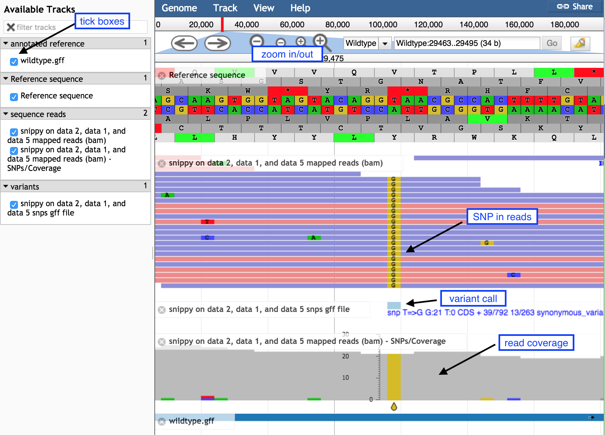

Variant calling is the process of identifying differences between two genome samples. Usually differences are limited to single nucleotide polymorphisms (SNPs) and small insertions and deletions (indels). Larger structural variation such as inversions, duplications and large deletions are not typically covered by “variant calling”.
Imagine that you have been asked to find the differences between a sample that has been sequenced and a known genome. For example: You have a new sample from a patient and you want to see if it has any differences from a well known reference genome of the same species. Typically, you would have a couple of fastq read files sent back to you from the sequencing provider and either an annotated or non annotated reference genome.
In this tutorial, we will use the tool “Snippy” (link to Snippy is here) to find high confidence differences (indels or SNPs) between our known genome and our reads. Snippy uses one tool to align the reads to the reference genome, and another tool to decide (“call”) if any of the resulting discrepancies are real variants or technical artifacts that can be ignored. Finally, Snippy uses another tool to check what effect these differences have on the predicted genes - truncation, frame shift or if the changes are synonymous.
For the read alignment (read mapping) step, Snippy uses BWA MEM with a custom set of settings which are very suitable to aligning reads for microbial type data. For the variant calling step, Snippy uses Freebayes with a custom set of settings. snpeff is then used to describe what the predicted changes do in terms of the genes themselves.
The Galaxy wrapper for Snippy has the ability to change some of the underlying tool settings in the advanced section but it is not recommended.
The data for today is a subset of a real dataset from a Staphylococcus aureus bacteria.
We have a closed genome sequence and an annotation for our “wildtype” strain.
We have used a whole genome shotgun approach to produce a set of short sequence reads on an Illumina DNA sequencing instrument for our mutant strain.
The reads are paired-end
Each read is on average 150 bases
The reads would cover the original wildtype genome to a depth of 19x
The files we will be using are:
mutant_R1.fastq & mutant_R2.fastq - the read files in fastq format.
wildtype.fna - The sequence of the reference strain in fasta format.
wildtype.gbk - The reference strain with gene and other annotations in genbank format.
wildtype.gff - The reference strain with gene and other annotations in gff3 format.
This data is available at Zenodo using the following link.
hands_on Hands-on: Get the data
Import all of the following files into a new history:
Open the Galaxy Upload Manager (galaxy-upload on the top-right of the tool panel)
Select Paste/Fetch Data
Paste the link into the text field
Press Start
Close the window
By default, Galaxy uses the URL as the name, so rename the files with a more useful name.
Find variants with Snippy
We will now run the Snippy tool on our reads, comparing it to the reference.
Snippy is a tool for rapid bacterial SNP calling and core genome alignments. Snippy finds SNPs between a haploid reference genome and your NGS sequence reads. It will find both substitutions (snps) and insertions/deletions (indels).
If we give Snippy an annotated reference, it will silently run a tool called SnpEff which will figure out the effect of any changes on the genes and other features. If we just give Snippy the reference sequence alone without the annotations, it will not run SnpEff.
We have an annotated reference and so will use it in this case.
hands_on Hands-on: Run Snippy
Snippytool with the following parameters
“Reference File” to the wildtype.gbk file (if the genbank file is not selectable, make sure to change its datatype to ‘genbank’)
“Single or Paired-end reads” to Paired
“Select first set of reads” to mutant_R1.fastq
“Select second set of reads” to mutant_R2.fastq
Select all outputs
Examine Snippy output
Snippy has taken the reads, mapped them against the reference using BWA MEM, looked through the resulting BAM file and found differences using some fancy Bayesian statistics (Freebayes), filtered the differences for sensibility and finally checked what effect these differences will have on the predicted genes and other features in the genome.
It produces quite a bit of output, there can be up to 10 output files.
Filename
Description
snps vcf file
The final annotated variants in VCF format
snps gff file
The variants in GFF3 format
snps table
A simple tab-separated summary of all the variants
snps summary
A summary of the SNPs called
log file
A log file with the commands run and their outputs
aligned fasta
A version of the reference but with - at position with depth=0 and N for 0 < depth < –mincov (does not have variants)
consensus fasta
A version of the reference genome with all variants instantiated
mapping depth
A table of the mapping depth
mapped reads bam
A BAM file containing all of the mapped reads
outdir
A tarball of the Snippy output directory for input into Snippy-core if required
We will now have a look at the contents of the SNP table file (snippy on data XX, data XX and data XX table):
1 2 3 4 5 6 7 8 9 10 11 12 13 14
CHROM POS TYPE REF ALT EVIDENCE FTYPE STRAND NT_POS AA_POS EFFECT LOCUS_TAG GENE PRODUCT
Wildtype 24388 snp A G G:22 A:0 CDS + 1/702 1/233 initiator_codon_variant c.1A>G p.Met1? WILD_00022 walR Transcriptional regulatory protein WalR
Wildtype 29479 snp T G G:21 T:0 CDS + 39/792 13/263 synonymous_variant c.39T>G p.Gly13Gly WILD_00026 yycJ Putative metallo-hydrolase YycJ
Wildtype 47299 snp T A A:24 T:0 CDS + 54/1758 18/585 stop_gained c.54T>A p.Cys18* WILD_00043 mecR1 Methicillin resistance mecR1 protein
Wildtype 102969 snp G C C:16 G:0 CDS - 87/1281 29/426 synonymous_variant c.87C>G p.Gly29Gly WILD_00093 spa Immunoglobulin G-binding protein A
Wildtype 103048 snp T A A:20 T:0 CDS - 8/1281 3/426 missense_variant c.8A>T p.Lys3Met WILD_00093 spa Immunoglobulin G-binding protein A
Wildtype 103379 del GAA GA GA:11 GAA:0
Wildtype 106602 snp T G G:21 T:0 CDS - 993/993 331/330 stop_lost&splice_region_variant c.993A>C p.Ter331Tyrext*? WILD_00097 yfiY putative siderophore-binding lipoprotein YfiY
Wildtype 109833 snp T A A:16 T:0 CDS + 1/1755 1/584 initiator_codon_variant c.1T>A p.Leu1? WILD_00100 iucC_1 Aerobactin synthase
Wildtype 114540 del ATT AT AT:25 ATT:0 CDS + 1717/1737 573/578 frameshift_variant c.1717delT p.Cys573fs WILD_00102 iucA N(2)-citryl-N(6)-acetyl-N(6)-hydroxylysine synthase
Wildtype 129881 mnp GT AA AA:18 GT:0 CDS + 55/708 19/235 missense_variant c.55_56delGTinsAA p.Val19Asn WILD_00117 deoD Purine nucleoside phosphorylase DeoD-type
Wildtype 138877 snp G C C:14 G:0 CDS + 1119/1545 373/514 missense_variant c.1119G>C p.Trp373Cys WILD_00125 hypothetical protein
Wildtype 138920 snp A G G:10 A:0 CDS + 1162/1545 388/514 missense_variant c.1162A>G p.Lys388Glu WILD_00125 hypothetical protein
Wildtype 160547 del GTC GC GC:18 GTC:0
Wildtype 160552 del CTA CA CA:20 CTA:0
Wildtype 190866 del GTT GT GT:18 GTT:0 CDS - 28/1356 10/451 frameshift_variant c.28delA p.Asn10fs WILD_00166 brnQ Branched-chain amino acid transport system 2 carrier protein
question Question
Which types of variants have been found?
What is the third variant called?
What is the product of the mutation?
What might be the result of such a mutation?
solution Solution
In the 3rd column, you have “snp” for SNP, “del” for deletion, “mnp” for
This is a T→A mutation, causing a stop codon
On the 14th column, we see that The product of this gene is a methicillin resistance protein. Methicillin is an antibiotic.
This will cause a truncation in the Methicillin gene and a loss of resistance in the organism.
View Snippy output in JBrowse
We could go through all of the variants like this and read them out of a text table, but this is onerous and doesn’t really give the context of the changes very well. It would be much nicer to have a visualisation of the SNPs and the other relevant data. In Galaxy we can use a tool called JBrowse.
hands_on Hands-on: Run JBrowse
JBrowsetool with the following parameters
“Reference genome to display” to Use a genome from history
“Select the reference genome” to wildtype.fna
This sequence will be the reference against which annotations are displayed
“Produce Standalone Instance” to Yes
“Genetic Code” to 11: The Bacterial, Archaeal and Plant Plastid Code
“JBrowse-in-Galaxy Action” to New JBrowse Instance
“Track Group”
We will now set up three different tracks - these are datasets displayed underneath the reference sequence (which is displayed as nucleotides in FASTA format). We will choose to display the sequence reads (the .bam file), the variants found by snippy (the .gff file) and the annotated reference genome (the wildtype.gff)
Track 1 - sequence reads: Click on Insert Track Group and fill it with
“Track Category” to sequence reads
Click on Insert Annotation Track and fill it with
“Track Type” to BAM Pileups
“BAM Track Data” to snippy bam file
“Autogenerate SNP Track” to Yes
“Track Visibility” to On for new users
Track 2 - variants: Click on Insert Track Group and fill it with
“Track Category” to variants
Click on Insert Annotation Track and fill it with
“Track Type” to GFF/GFF3/BED/GBK Features
“GFF/GFF3/BED Track Data” to snippy snps gff file
“Track Visibility” to On for new users
Track 3 - annotated reference: Click on Insert Track Group and fill it with
“Track Category” to annotated reference
Click on Insert Annotation Track and fill it with
“Track Type” to GFF/GFF3/BED/GBK Features
“GFF/GFF3/BED Track Data” to wildtype.gff
“JBrowse Track Type [Advanced]” to Canvas Features
Click on “JBrowse Styling Options [Advanced]”
“JBrowse style.label” to product
“JBrowse style.description” to product
“Track Visibility” to On for new users
A new dataset will be created in your history, containing the JBrowse interactive visualisation. We will now view its contents and play with it by clicking the galaxy-eye (eye) icon of the JBrowse on data XX and data XX - Complete dataset. The JBrowse window will appear in the centre Galaxy panel.
hands_on Hands-on: Inspecting the SNPs using JBrowse
Display all the tracks and practice maneuvering around
Click on the tick boxes on the left to display the tracks
Zoom out by clicking on the minus button to see sequence reads and their coverage (the grey graph)
Zoom in by clicking on the plus button to see
probable real variants (a whole column of SNPs)
probable errors (single one here and there)
Figure 1: Screenshot of JBrowse
Look at the stop SNP
Type 47299 in the coordinates box
Click on Go to see the position of the SNP discussed above
Figure 2: Inspection of the STOP SNP using JBrowse
question Questions
What is the correct codon at this position?
What is the mutation found here?
solution Solution
The correct codon at this position is TGT, coding for the amino acid Cysteine (middle row of the amino acid translations).
The mutation of T → A turns this triplet into TGA, a stop codon.
Conclusion
By running a tool such as Snippy on your read files and reference genome, we can find where the biologically important changes between genomes of different strains occur and perhaps what they mean to the phenotype.
keypoints Key points
We used a tool called Snippy to call variants between our reads and our reference genome.
As our reference genome had annotations, we could see what effect the changes have on the features as annotated in the reference and therefore make inferences on the possible changes to the phenotype.
We used the JBrowse genome browser to visualise what these changes look like.
Useful literature
Further information, including links to documentation and original publications, regarding the tools, analysis techniques and the interpretation of results described in this tutorial can be found here.
congratulations Congratulations on successfully completing this tutorial!
feedback Give us even more feedback on this content!
To give us more detailed feedback about these materials, please take a moment to fill in the extended Feedback Form.
 Anna Syme
Anna Syme Simon Gladman
Simon Gladman Torsten Seemann
Torsten Seemann